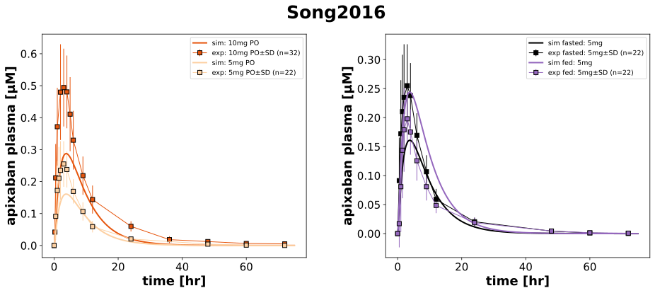

|
 |
../../../../experiments/studies/song2016.py
import math
from typing import Dict
from sbmlsim.data import DataSet, load_pkdb_dataframe
from sbmlsim.fit import FitMapping, FitData
from sbmlutils.console import console
from pkdb_models.models.apixaban.experiments.base_experiment import (
ApixabanSimulationExperiment,
)
from pkdb_models.models.apixaban.experiments.metadata import (
Tissue, Route, Dosing, ApplicationForm, Health, Fasting, ApixabanMappingMetaData
)
from sbmlsim.plot import Axis, Figure
# noqa: E402
from sbmlsim.simulation import Timecourse, TimecourseSim
from pkdb_models.models.apixaban.helpers import run_experiments
class Song2016(ApixabanSimulationExperiment):
"""Simulation experiment of Song2016."""
colors_doses = {
"API10_tablet_crushed": "#e6550d",
"API5_food_fasted": "#fdd0a2",
}
colors_fasting = {
"API5_food_fasted": "black",
"API5_food_fed": "tab:purple",
}
bodyweight = { # [kg]
"API10_tablet_crushed": 77.4,
"API5_food_fasted": 69.2,
"API5_food_fed": 69.2,
}
groups = list(bodyweight.keys())
bodyheight = { # [m]
"API10_tablet_crushed": math.sqrt(77.4/26.1),
"API5_food_fasted": math.sqrt(69.2/23.6),
"API5_food_fed": math.sqrt(69.2/23.6),
}
dose = {
"API10_tablet_crushed": 10,
"API5_food_fasted": 5,
"API5_food_fed": 5,
}
absorption = {
"API10_tablet_crushed": "fasted",
"API5_food_fasted": "fasted",
"API5_food_fed": "fed",
}
infos_pk = {
"[Cve_api]": "apixaban",
}
def datasets(self) -> Dict[str, DataSet]:
dsets = {}
for fig_id in ["Fig1", "Fig2"]:
df = load_pkdb_dataframe(f"{self.sid}_{fig_id}", data_path=self.data_path)
for label, df_label in df.groupby("label"):
dset = DataSet.from_df(df_label, self.ureg)
if label.startswith("API10_tablet") or label.startswith("API5_"):
dset.unit_conversion("mean", 1 / self.Mr.api)
dsets[label] = dset
# console.print("datasets:", list(dsets.keys()))
return dsets
def simulations(self) -> Dict[str, TimecourseSim]:
Q_ = self.Q_
tcsims: Dict[str, TimecourseSim] = {}
for group in self.groups:
tcsims[f"{group}_api_{self.absorption[group]}"] = TimecourseSim([
Timecourse(
start=0,
end=75 * 60, # [min]
steps=500,
changes={
**self.default_changes(),
"PODOSE_api": Q_(self.dose[group], "mg"),
"BW": Q_(self.bodyweight[group], "kg"),
"HEIGHT": Q_(self.bodyheight[group], "m"),
"GU__F_api_abs": Q_(self.fasting_map[self.absorption[group]], "dimensionless"),
},
)
])
return tcsims
# Fit Mappings
def fit_mappings(self) -> Dict[str, FitMapping]:
mappings: Dict[str, FitMapping] = {}
infos = {
**self.infos_pk,
}
for sid, name in infos.items():
for group in self.groups:
mappings[f"fm_{name}_api__{group}_{self.absorption[group]}"] = FitMapping(
self,
reference=FitData(
self,
dataset=f"{group}_{name}",
xid="time",
yid="mean",
yid_sd="mean_sd",
count="count",
),
observable=FitData(
self,
task=f"task_{group}_api_{self.absorption[group]}",
xid="time",
yid=sid,
),
metadata=ApixabanMappingMetaData(
tissue=Tissue.PLASMA,
route=Route.PO,
application_form=ApplicationForm.TABLET,
dosing=Dosing.SINGLE,
health=Health.HEALTHY,
fasting=Fasting.FASTED if self.absorption[group] == "fasted" else Fasting.FED,
),
)
return mappings
def figures(self) -> Dict[str, Figure]:
return {
**self.figure_pk(),
}
def figure_pk(self) -> Dict[str, Figure]:
plot_info = {
0: ("[Cve_api]", ["API10_tablet_crushed", "API5_food_fasted"], self.colors_doses),
1: ("[Cve_api]", ["API5_food_fasted", "API5_food_fed"], self.colors_fasting),
}
fig = Figure(
experiment=self,
sid="PK",
name=f"{self.__class__.__name__}",
num_cols=2,
num_rows=1,
height=self.panel_height,
width=self.panel_width * 2,
)
plots = fig.create_plots(
xaxis=Axis(self.label_time, unit=self.unit_time),
legend=True,
)
for kp, (sid, groups, colors) in plot_info.items():
plots[kp].set_yaxis(self.labels[sid], unit=self.units[sid])
for group in groups:
name = self.infos_pk[sid]
dose = self.dose[group]
abs_group = self.absorption[group]
# Simulation
plots[kp].add_data(
task=f"task_{group}_api_{self.absorption[group]}",
xid="time",
yid=sid,
label=f"sim: {dose}mg PO" if kp == 0 else f"sim {abs_group}: {dose}mg",
color=colors[group]
)
# Data
plots[kp].add_data(
dataset=f"{group}_{name}",
xid="time",
yid="mean",
yid_sd="mean_sd",
count="count",
label=f"exp: {dose}mg PO" if kp == 0 else f"exp {abs_group}: {dose}mg",
color=colors[group],
linestyle="solid",
)
return {fig.sid: fig}
if __name__ == "__main__":
run_experiments(Song2016, output_dir=Song2016.__name__)
{kind=link}